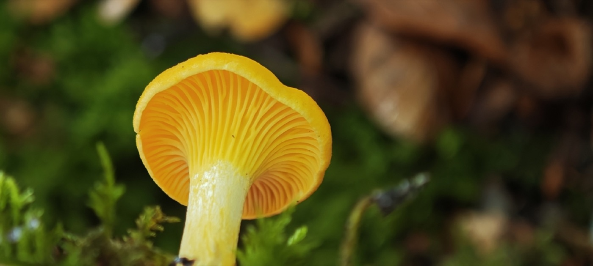

Snap a leaf, tree or mushroom. Works offline, warns about deadly look-alikes.
Works with no signal. BioCLIP 2, an open model trained on 200 million biology photos, runs on your phone. The first visit downloads it once (609 MB); after that it works in airplane mode. Photos never leave the phone.
Warns about deadly look-alikes. A hand-written list of toxic genera (death cap, poison hemlock, false morel…) is checked against every answer and its known look-alikes.
Knows when it's guessing. A trust meter learned with TabPFN on 3,000 fresh iNaturalist photos says "not sure" instead of bluffing.
Never eat anything based on an app.
11,896 plants & fungi from GBIF · descriptions from Wikipedia (CC BY-SA) · example photos from iNaturalist: fly agaric (CC0), pedrogarabaya, Michel Langeveld, Álvaro Ibaceta R. (CC BY) · source code (MIT)